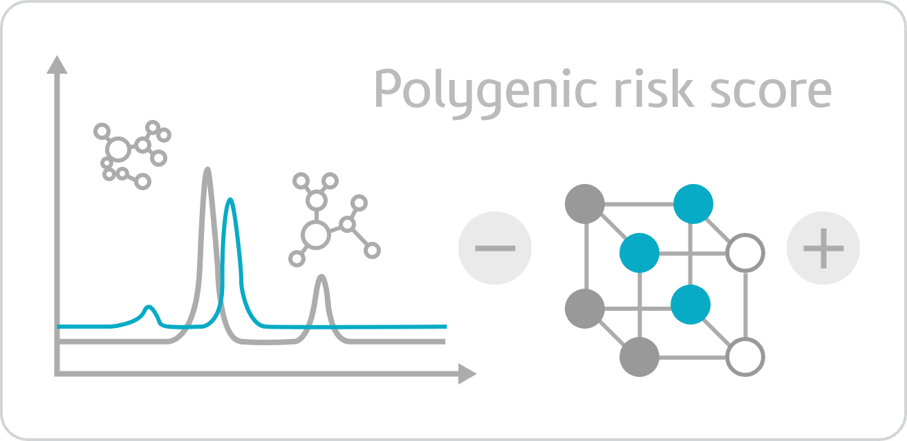

고객 안내사항
닫기
검사의 제한성 및 주의사항
본 검사에서 제공하는 결과는 해당 항목과 관계가 있는 모든 유전자를 분석한 것은 아니며, 해당 항목에 영향을 주는 환경 및 생활 습관 등의 다른 요인을 고려하지 않고 유전자형에만 근거하여 분석하므로 현재의 상태와 다를 수 있습니다.
본 검사는 유전적 위험도를 예측하는 자료이며 위험도가 높다고 하여 반드시 해당 항목(표현형)이 발생한다는 의미는 아니며, 위험도가 낮다고 해서 해당 항목(표현형)이 발생하지 않는다는 의미는 아닙니다.
검사에 사용된
본 검사는 새인의 건강 및
본 검사는 유전지환 검사가 아닌
생명윤리법 제46조 유전정보에 의한 차별금지 규정에 의해
검사결과지는 검사대상자 본인에게만 제공되며
결과와 해석은 새로운 정보가 추가됨에 따라 변경될 수 있습니다.(2021.01.31)
개인정보 보호 관리 규정
생명윤리법 "제52조 기록 보관 및 정보의 공개"에 따라 동의서와 유전자 검사결과(전자문서 포함)는 10년간 보관되며, 검사 대상물의 제공에 대한 기록(전자문서 포함)은 5년간 보관됩니다.
본 검사는 개인정보의 안전한 보호를 위해 개인 정보보호 법률 및 관련 법률과 표준 개인정보 보호 지침에서 정의된 바를 준수하고 있으며, 기타 개인정보 보호에 대한 관리 규정은 본 기관의 홈페이지를 통해 확인 할 수 있습니다.
개인정보 보호법 "제32조 민감 정보의 처리 제한"에 따라 본 서비스를 통해 수집 및 생성된 개인정보는 본 검사의 목적 이외에는 사용되지 않으며, 분실, 도난, 유출, 변조 또는 훼손되지 않도록 안전하게 관리되게 됩니다.
유전자 점수 산출 방법 이해하기

본 유전자검사의 결과는 다중유전자위험점수(Polygenic Risk Score)로 산출하였습니다. 해당 검사항목에 영향을 미치는 유전적 요소들은 매우 다양하며, 다양한 유전자의 유전자형 조합을 통해서 그 효과와 영향력을 예측할 수 있습니다.
다중유전자위험점수는 한 사람의 특정 표현형에 관하여는 여러 유전자들의 유전자형 값을 조합하여 표현형에 미치는 영향력을 수치화한 것입니다.
취소
동의함